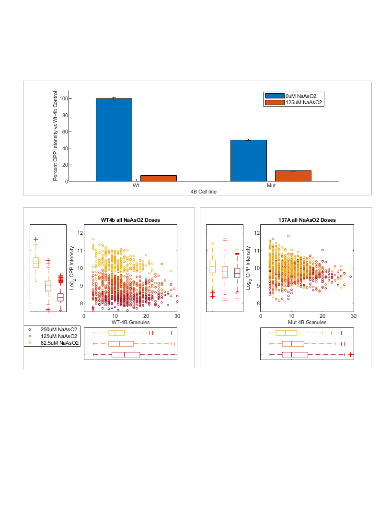
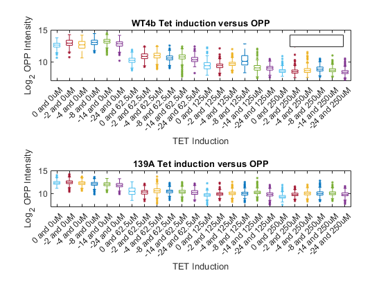

Contents
Load the appended and aligned Live_cell last frame and IF data
basePath = 'Z:\imageData\SG_4B\';
dataset1=load([basePath,'2023-06-29 4B WT vs Mut TET curve NaAsO2 curve\2023-06-29 4B WT vs Mut TET curve NaAsO2 curve_Processed.mat']);
dataset1 = dataset1.dataloc;
dataset1.movieinfo.PixSizeX = 0.33;
dataset1.movieinfo.PixSizeY = 0.33;
dataset1.movieinfo.PixNumX = 1600;
dataset1.movieinfo.PixNumY = 1600;
dataset1.movieinfo.tsamp = 3;
Figure 3 - RRM of 4B affects Translation and Translational haulting in stress conditions
tetTime = "hour -24";
naAsO2 = (" 0uM"|" 125uM");
subF3A = all([contains(dataset1.ifd.treatment,tetTime),~contains(dataset1.ifd.cell,'bad'),contains(dataset1.ifd.treatment,naAsO2) ...
],2);
subF3Adata = dataset1.ifd(subF3A,:);
subF3Adata.treatment = strrep(subF3Adata.treatment,'0.1ug/mL TET at hour -24 and ','');
catOrder = ["0uM NaAsO2","125uM NaAsO2"];
subF3Adata.treatment = categorical(subF3Adata.treatment,catOrder);
subF3Adata.cell = strrep(subF3Adata.cell,'HeLa eIF4BGFP','Wt');
subF3Adata.cell = strrep(subF3Adata.cell,'HeLa 4B139AGFP','Mt');
subF3Adata.cell = categorical(subF3Adata.cell,{'Wt','Mt'});
subF3Adata.OPP = subF3Adata.Intensity_MeanIntensity_Masked_OPP*65535;
subF3Adata.l2OPP = log2(subF3Adata.OPP);
generalOPPData = grpstats(subF3Adata,["cell","treatment"],["mean","median","sem","std"],"DataVars",["OPP","l2OPP"])
generalOPPData =
4×11 table
cell treatment GroupCount mean_OPP median_OPP sem_OPP std_OPP mean_l2OPP median_l2OPP sem_l2OPP std_l2OPP
____ ____________ __________ ________ __________ _______ _______ __________ ____________ _________ _________
Wt_0uM NaAsO2 Wt 0uM NaAsO2 464 7464.6 7271.3 120.13 2587.7 12.777 12.828 0.024078 0.51866
Wt_125uM NaAsO2 Wt 125uM NaAsO2 417 538.15 527.83 7.9829 163.02 9.009 9.0439 0.020947 0.42775
Mt_0uM NaAsO2 Mt 0uM NaAsO2 523 3746.6 3487.6 61.095 1397.2 11.776 11.768 0.023101 0.5283
Mt_125uM NaAsO2 Mt 125uM NaAsO2 319 959.68 877.14 25.135 448.93 9.7709 9.7767 0.03554 0.63477
Do the % OPP intensity of everyone vs the mean OPP intensity of the 24 TET induced vehicle control wt-4b cells
meanOppWt4bNoAs = generalOPPData{"Wt_0uM NaAsO2","mean_OPP"};
meanOppMt4bNoAs = generalOPPData{"Mt_0uM NaAsO2","mean_OPP"};
meanl2OppWt4bNoAs = generalOPPData{"Wt_0uM NaAsO2","mean_l2OPP"};
meanl2OppMt4bNoAs = generalOPPData{"Mt_0uM NaAsO2","mean_l2OPP"};
subF3Adata.PercOPP = (subF3Adata.OPP/meanOppWt4bNoAs)*100;
subF3Adata.MtPercOPP = (subF3Adata.OPP/meanOppMt4bNoAs)*100;
generalPercOPPData = grpstats(subF3Adata,["cell","treatment"],["mean","median","sem","std"],"DataVars",["PercOPP","MtPercOPP"])
[~,~,statsOPP] = anova1(subF3Adata.PercOPP,join(string([subF3Adata.cell,subF3Adata.treatment])),'off');
[resultsOPP,~,~,gnamesOPP] = multcompare(statsOPP,"CriticalValueType","dunnett",'ControlGroup',find(matches(statsOPP.gnames,'Wt 0uM NaAsO2')),'Display','off','Approximate',false);
PercOPP = array2table(resultsOPP,"VariableNames", ["Group","Control Group","Lower Limit","Difference","Upper Limit","P-value"]);
PercOPP.("Group") = gnamesOPP(PercOPP.("Group"));
PercOPP.("Control Group") = gnamesOPP(PercOPP.("Control Group"))
[~,~,statsOPP] = anova1(subF3Adata.PercOPP,join(string([subF3Adata.cell,subF3Adata.treatment])),'off');
[resultsOPP,~,~,gnamesOPP] = multcompare(statsOPP,"CriticalValueType","dunnett",'ControlGroup',find(matches(statsOPP.gnames,'Mt 125uM NaAsO2')),'Display','off','Approximate',false);
PercOPP = array2table(resultsOPP,"VariableNames", ["Group","Control Group","Lower Limit","Difference","Upper Limit","P-value"]);
PercOPP.("Group") = gnamesOPP(PercOPP.("Group"));
PercOPP.("Control Group") = gnamesOPP(PercOPP.("Control Group"))
generalPercOPPData =
4×11 table
cell treatment GroupCount mean_PercOPP median_PercOPP sem_PercOPP std_PercOPP mean_MtPercOPP median_MtPercOPP sem_MtPercOPP std_MtPercOPP
____ ____________ __________ ____________ ______________ ___________ ___________ ______________ ________________ _____________ _____________
Wt_0uM NaAsO2 Wt 0uM NaAsO2 464 100 97.41 1.6093 34.666 199.24 194.08 3.2064 69.068
Wt_125uM NaAsO2 Wt 125uM NaAsO2 417 7.2094 7.071 0.10694 2.1838 14.364 14.088 0.21307 4.351
Mt_0uM NaAsO2 Mt 0uM NaAsO2 523 50.191 46.722 0.81845 18.717 100 93.087 1.6307 37.292
Mt_125uM NaAsO2 Mt 125uM NaAsO2 319 12.856 11.751 0.33673 6.0141 25.615 23.412 0.67089 11.982
PercOPP =
3×6 table
Group Control Group Lower Limit Difference Upper Limit P-value
___________________ _________________ ___________ __________ ___________ __________
{'Wt 125uM NaAsO2'} {'Wt 0uM NaAsO2'} -96.118 -92.791 -89.463 4.4409e-16
{'Mt 125uM NaAsO2'} {'Wt 0uM NaAsO2'} -90.73 -87.144 -83.557 0
{'Mt 0uM NaAsO2' } {'Wt 0uM NaAsO2'} -52.953 -49.809 -46.664 2.2204e-16
PercOPP =
3×6 table
Group Control Group Lower Limit Difference Upper Limit P-value
___________________ ___________________ ___________ __________ ___________ __________
{'Wt 125uM NaAsO2'} {'Mt 125uM NaAsO2'} -9.2757 -5.647 -2.0182 0.00083878
{'Wt 0uM NaAsO2' } {'Mt 125uM NaAsO2'} 83.595 87.144 90.692 0
{'Mt 0uM NaAsO2' } {'Mt 125uM NaAsO2'} 33.869 37.335 40.801 0
Figure 3D - PLSR of Granule kinetics and OPP outcome
[fitData2,~] = convertDatalocToModelFit({dataset1}, 'NumGrans','pulsepars',{'f','td','ts','rate_in_min','min_to_respond','rsquared','granarea'},'afterf',1);
Subset only the good data
fitData = fitData2;
gFitData2 = fitData((fitData.NumGrans_rsquared > 0.8),:);
gFitData2.cell = strrep(gFitData2.cell,'HeLa_eIF4BGFP','Wt');
gFitData2.cell = strrep(gFitData2.cell,'HeLa_4B139AGFP','Mut');
gFitData2.xy = gFitData2.NumGrans_xy;
gFitData2.cellid = gFitData2.NumGrans_cellid;
ifD = dataset1.ifd;
ifD.xy = ifD.ImageNumber;
missinD = isnan(ifD.cellid);
ifD2 = ifD(~missinD,:);
[~, idxG] = ismember(gFitData2(:,["cellid","xy"]), ifD2(:,["cellid","xy"]), 'rows');
[~, idxI] = ismember(ifD2(:,["cellid","xy"]),gFitData2(:,["cellid","xy"]), 'rows');
gFitData2 = gFitData2(idxG > 0, :);
ifD2 = ifD2(idxI > 0, :);
fAndIF = join(gFitData2,ifD2,'LeftKeys',{'xy','cellid'},'RightKeys',{'xy','cellid'},'KeepOneCopy',{'treatment','cell','full'});
fAndIF.cell = categorical(fAndIF.cell,{'Wt','Mut','HeLa_bad'});
allDataWts = all([fAndIF.cell=='Wt',contains(fAndIF.treatment,"hour -24")],2);
allDataMuts = all([fAndIF.cell=='Mut',contains(fAndIF.treatment,"hour -24")],2);
fAndIF.OPP = fAndIF.Intensity_MeanIntensity_Masked_OPP*65535;
fAndIF.l2OPP = log2(fAndIF.OPP);
fAndIF.zOPP = nan([height(fAndIF),1]);
fAndIF.zl2OPP = nan([height(fAndIF),1]);
fAndIF{allDataWts,"zOPP"} = zscore(fAndIF{allDataWts,"OPP"});
fAndIF{allDataWts,"zl2OPP"} = zscore(fAndIF{allDataWts,"l2OPP"});
fAndIF{allDataMuts,"zOPP"} = zscore(fAndIF{allDataMuts,"OPP"});
fAndIF{allDataMuts,"zl2OPP"} = zscore(fAndIF{allDataMuts,"l2OPP"});
Collect the data for use in PLSR
minGrans = 3;
tetTime = "hour -24";
naAsO2 = (" 62.5uM"|" 125uM"|" 250uM");
subF3D = all([contains(fAndIF.treatment,tetTime),(fAndIF.cell~="HeLa_bad"),contains(fAndIF.treatment,naAsO2), ...
(fAndIF.NumGrans_f >= minGrans)],2);
subF3Ddata = fAndIF(subF3D,:);
subF3Ddata.treatment = strrep(subF3Ddata.treatment,'0.1ug/mL TET at hour -24 and ','');
subF3Ddata.treatment = strrep(subF3Ddata.treatment,' NaAsO2 at hour 0','');
subF3Ddata.treatment = categorical(subF3Ddata.treatment,{'62.5uM','125uM','250uM'});
subF3Ddata.dose = str2double(strrep(string(subF3Ddata.treatment),'uM',''));
subF3Ddata.celln = zeros([height(subF3Ddata),1]);
f3DWts = subF3Ddata.cell=='Wt';
f3DMuts = subF3Ddata.cell=='Mut';
subF3Ddata{f3DMuts,"celln"} = ones([sum(f3DMuts),1]);
subF3Ddata.PercOPP = ((subF3Ddata.OPP - meanOppWt4bNoAs) / meanOppWt4bNoAs) *100;
subF3Ddata.PercOPP(f3DMuts) = ((subF3Ddata{f3DMuts,"OPP"} - meanOppMt4bNoAs) / meanOppMt4bNoAs) *100;
subF3Ddata.Percl2OPP = ((subF3Ddata.l2OPP - meanl2OppWt4bNoAs) / meanl2OppWt4bNoAs) * 100;
subF3Ddata.Percl2OPP(f3DMuts) = (((subF3Ddata{f3DMuts,"l2OPP"} - meanl2OppMt4bNoAs) / meanl2OppMt4bNoAs) * 100);
percChangeInOpp = grpstats(subF3Ddata,["treatment","cell"],["mean","median","sem","std"],"DataVars",["PercOPP","Percl2OPP"])
percChangeInOpp = grpstats(subF3Ddata,["treatment","cell"],["mean","sem","std"],"DataVars",["PercOPP","Percl2OPP"])
[~,~,statsOPP] = anova1(subF3Ddata.PercOPP,join(string([subF3Ddata.treatment,subF3Ddata.cell])),'off');
[resultsOPP,~,~,gnamesOPP] = multcompare(statsOPP,"CriticalValueType","dunnett",'ControlGroup',find(matches(statsOPP.gnames,'62.5uM Wt')),'Display','off','Approximate',false);
PercOPP = array2table(resultsOPP,"VariableNames", ["Group","Control Group","Lower Limit","Difference","Upper Limit","P-value"]);
PercOPP.("Group") = gnamesOPP(PercOPP.("Group"));
PercOPP.("Control Group") = gnamesOPP(PercOPP.("Control Group"))
[~,~,statsOPP] = anova1(subF3Ddata.PercOPP,join(string([subF3Ddata.treatment,subF3Ddata.cell])),'off');
[resultsOPP,~,~,gnamesOPP] = multcompare(statsOPP,"CriticalValueType","dunnett",'ControlGroup',find(matches(statsOPP.gnames,'125uM Wt')),'Display','off','Approximate',false);
PercOPP = array2table(resultsOPP,"VariableNames", ["Group","Control Group","Lower Limit","Difference","Upper Limit","P-value"]);
PercOPP.("Group") = gnamesOPP(PercOPP.("Group"));
PercOPP.("Control Group") = gnamesOPP(PercOPP.("Control Group"))
[~,~,statsOPP] = anova1(subF3Ddata.PercOPP,join(string([subF3Ddata.treatment,subF3Ddata.cell])),'off');
[resultsOPP,~,~,gnamesOPP] = multcompare(statsOPP,"CriticalValueType","dunnett",'ControlGroup',find(matches(statsOPP.gnames,'250uM Wt')),'Display','off','Approximate',false);
PercOPP = array2table(resultsOPP,"VariableNames", ["Group","Control Group","Lower Limit","Difference","Upper Limit","P-value"]);
PercOPP.("Group") = gnamesOPP(PercOPP.("Group"));
PercOPP.("Control Group") = gnamesOPP(PercOPP.("Control Group"))
percChangeInOpp =
6×11 table
treatment cell GroupCount mean_PercOPP median_PercOPP sem_PercOPP std_PercOPP mean_Percl2OPP median_Percl2OPP sem_Percl2OPP std_Percl2OPP
_________ ____ __________ ____________ ______________ ___________ ___________ ______________ ________________ _____________ _____________
62.5uM_Wt 62.5uM Wt 193 -82.315 -83.256 0.35205 4.8909 -19.272 -19.486 0.21546 2.9933
62.5uM_Mut 62.5uM Mut 232 -69.691 -71.721 0.67878 10.339 -14.445 -14.664 0.25492 3.8828
125uM_Wt 125uM Wt 266 -92.753 -92.92 0.12163 1.9837 -29.331 -29.206 0.18093 2.9508
125uM_Mut 125uM Mut 180 -74.921 -75.979 0.57669 7.7371 -16.667 -16.664 0.26698 3.582
250uM_Wt 250uM Wt 275 -95.248 -95.536 0.092125 1.5277 -34.105 -34.413 0.1694 2.8091
250uM_Mut 250uM Mut 296 -75.551 -77.03 0.43927 7.5576 -16.95 -17.211 0.20046 3.4489
percChangeInOpp =
6×9 table
treatment cell GroupCount mean_PercOPP sem_PercOPP std_PercOPP mean_Percl2OPP sem_Percl2OPP std_Percl2OPP
_________ ____ __________ ____________ ___________ ___________ ______________ _____________ _____________
62.5uM_Wt 62.5uM Wt 193 -82.315 0.35205 4.8909 -19.272 0.21546 2.9933
62.5uM_Mut 62.5uM Mut 232 -69.691 0.67878 10.339 -14.445 0.25492 3.8828
125uM_Wt 125uM Wt 266 -92.753 0.12163 1.9837 -29.331 0.18093 2.9508
125uM_Mut 125uM Mut 180 -74.921 0.57669 7.7371 -16.667 0.26698 3.582
250uM_Wt 250uM Wt 275 -95.248 0.092125 1.5277 -34.105 0.1694 2.8091
250uM_Mut 250uM Mut 296 -75.551 0.43927 7.5576 -16.95 0.20046 3.4489
PercOPP =
5×6 table
Group Control Group Lower Limit Difference Upper Limit P-value
______________ _____________ ___________ __________ ___________ _______
{'62.5uM Mut'} {'62.5uM Wt'} 11.072 12.624 14.177 0
{'125uM Wt' } {'62.5uM Wt'} -11.945 -10.438 -8.9305 0
{'125uM Mut' } {'62.5uM Wt'} 5.743 7.3945 9.046 0
{'250uM Wt' } {'62.5uM Wt'} -14.429 -12.932 -11.436 0
{'250uM Mut' } {'62.5uM Wt'} 5.2898 6.7643 8.2389 0
PercOPP =
5×6 table
Group Control Group Lower Limit Difference Upper Limit P-value
______________ _____________ ___________ __________ ___________ __________
{'62.5uM Wt' } {'125uM Wt'} 8.9143 10.438 11.961 0
{'62.5uM Mut'} {'125uM Wt'} 21.615 23.062 24.509 0
{'125uM Mut' } {'125uM Wt'} 16.277 17.832 19.387 0
{'250uM Wt' } {'125uM Wt'} -3.88 -2.4946 -1.1091 2.7968e-05
{'250uM Mut' } {'125uM Wt'} 15.841 17.202 18.563 0
PercOPP =
5×6 table
Group Control Group Lower Limit Difference Upper Limit P-value
______________ _____________ ___________ __________ ___________ __________
{'62.5uM Wt' } {'250uM Wt'} 11.418 12.932 14.446 0
{'62.5uM Mut'} {'250uM Wt'} 24.119 25.556 26.994 0
{'125uM Wt' } {'250uM Wt'} 1.1078 2.4946 3.8814 3.3243e-05
{'125uM Mut' } {'250uM Wt'} 18.781 20.327 21.873 0
{'250uM Mut' } {'250uM Wt'} 18.346 19.696 21.047 0
Do PLSR comparing % var explained vs inputs like SG kinetics, cell line, and NaAsO2 Dose
plsOut = [];
plsOut{1} = pls([subF3Ddata.dose,subF3Ddata.NumGrans_f,subF3Ddata.NumGrans_rate_in_min,subF3Ddata.NumGrans_min_to_respond,subF3Ddata.celln],...
subF3Ddata.l2OPP, 'params', {'dose','F','rate','nd','cellLine'},'ploton',false,'rm_zero',false,'rm_xsout',false,'rm_outliers',false);
plsOut{2} = pls([subF3Ddata.NumGrans_f,subF3Ddata.NumGrans_rate_in_min,subF3Ddata.NumGrans_min_to_respond,subF3Ddata.celln],...
subF3Ddata.l2OPP, 'params', {'F','rate','nd','cellLine'},'ploton',false,'rm_zero',false,'rm_xsout',false,'rm_outliers',false,'bstrap',true);
plsOut{3} = pls(subF3Ddata.dose,...
subF3Ddata.l2OPP, 'params', {'dose'},'ploton',false,'rm_zero',false,'rm_xsout',false,'rm_outliers',false);
plsOut{4} = pls(subF3Ddata.NumGrans_f,...
subF3Ddata.l2OPP, 'params', {'F'},'ploton',false,'rm_zero',false,'rm_xsout',false,'rm_outliers',false);
plsOut{5} = pls(subF3Ddata.NumGrans_rate_in_min,...
subF3Ddata.l2OPP, 'params', {'rate'},'ploton',false,'rm_zero',false,'rm_xsout',false,'rm_outliers',false);
plsOut{6} = pls(subF3Ddata.NumGrans_min_to_respond,...
subF3Ddata.l2OPP, 'params', {'nd'},'ploton',false,'rm_zero',false,'rm_xsout',false,'rm_outliers',false);
plsOut{7} = pls(subF3Ddata.celln,...
subF3Ddata.l2OPP, 'params', {'cellLine'},'ploton',false,'rm_zero',false,'rm_xsout',false,'rm_outliers',false);
plsOut{8} = pls([subF3Ddata.NumGrans_min_to_respond,subF3Ddata.celln],...
subF3Ddata.l2OPP, 'params', {'nd','cellLine'},'ploton',false,'rm_zero',false,'rm_xsout',false,'rm_outliers',false);
plsOut{9} = pls([subF3Ddata.NumGrans_f,subF3Ddata.celln],...
subF3Ddata.l2OPP, 'params', {'f','cellLine'},'ploton',false,'rm_zero',false,'rm_xsout',false,'rm_outliers',false);
plsOut{10} = pls([subF3Ddata.NumGrans_rate_in_min,subF3Ddata.celln],...
subF3Ddata.l2OPP, 'params', {'rate','cellLine'},'ploton',false,'rm_zero',false,'rm_xsout',false,'rm_outliers',false);
plsOut{11} = pls([subF3Ddata.NumGrans_f,subF3Ddata.NumGrans_rate_in_min,subF3Ddata.celln],...
subF3Ddata.l2OPP, 'params', {'f','rate','cellLine'},'ploton',false,'rm_zero',false,'rm_xsout',false,'rm_outliers',false);
plsOut{12} = pls([subF3Ddata.NumGrans_min_to_respond,subF3Ddata.NumGrans_rate_in_min,subF3Ddata.celln],...
subF3Ddata.l2OPP, 'params', {'nd','rate','cellLine'},'ploton',false,'rm_zero',false,'rm_xsout',false,'rm_outliers',false);
plsOut{13} = pls([subF3Ddata.NumGrans_f,subF3Ddata.NumGrans_min_to_respond,subF3Ddata.celln],...
subF3Ddata.l2OPP, 'params', {'f','nd','cellLine'},'ploton',false,'rm_zero',false,'rm_xsout',false,'rm_outliers',false);
plsOut{14} = pls([subF3Ddata.dose,subF3Ddata.celln],...
subF3Ddata.l2OPP, 'params', {'dose','cellLine'},'ploton',false,'rm_zero',false,'rm_xsout',false,'rm_outliers',false);
plsOut{15} = pls([subF3Ddata.NumGrans_f,subF3Ddata.NumGrans_rate_in_min,subF3Ddata.NumGrans_min_to_respond],...
subF3Ddata.l2OPP, 'params', {'F','rate','nd'},'ploton',false,'rm_zero',false,'rm_xsout',false,'rm_outliers',false);
legList = {'dose+F+rate+nd+cell','F+rate+nd+cell','dose','F','rate','nd','cell','nd+cell','f+cell','rate+cell','f+rate+cell','nd+rate+cell','f+nd+cell','dose+cell','f+rate+nd'};
varExpTable = table('size',[size(plsOut,2),2],'VariableTypes',{'cell','double'},'VariableNames',{'PLSR_inputs','Perc_varance_l2OPP_change_explained'});
varExpTable.PLSR_inputs = legList';
for iPLSR = 1:numel(plsOut)
varExpTable{iPLSR,2} = max(cumsum(plsOut{iPLSR}.PCTVAR(2,:))*100,[],2,"omitnan");
end
varExpTable
writetable(varExpTable,'Z:\imageData\SG_4B\Paper_Figures\Output_Figures\PlsrPercVarExplained.csv')
varExpTable =
15×2 table
PLSR_inputs Perc_varance_l2OPP_change_explained
_______________________ ___________________________________
{'dose+F+rate+nd+cell'} 54.036
{'F+rate+nd+cell' } 47.932
{'dose' } 25.973
{'F' } 21.483
{'rate' } 9.5594
{'nd' } 26.275
{'cell' } 23.451
{'nd+cell' } 45.367
{'f+cell' } 35.601
{'rate+cell' } 28.054
{'f+rate+cell' } 36.222
{'nd+rate+cell' } 45.955
{'f+nd+cell' } 47.944
{'dose+cell' } 49.855
{'f+rate+nd' } 33.684
Prepare wt and mut data for Figure 3B and 3C plots
minGrans = 3;
tetTime = '-24';
generalOPPData = grpstats(subF3Adata,["cell","treatment"],["mean","median","sem","std"],"DataVars","OPP")
subzWT = all([contains(dataset1.ifd.treatment,['TET at hour ', tetTime]),contains(dataset1.ifd.cell,'4BGFP')...
, (dataset1.ifd.Children_Grans_4B_Count >= minGrans), ~contains(dataset1.ifd.treatment,'and 0uM')],2);
wtData = dataset1.ifd(subzWT,:);
wtData.OPP = wtData.Intensity_MeanIntensity_Masked_OPP*65535;
wtData.l2OPP = log2(wtData.OPP);
wtData.PercOPP = 100 + (((wtData.OPP - generalOPPData{"Wt_0uM NaAsO2","mean_OPP"}) / generalOPPData{"Wt_0uM NaAsO2","mean_OPP"}) * 100);
wtData.treatment = strrep(wtData.treatment,'0.1ug/mL TET at hour -24 and ','');
wtData.treatment = strrep(wtData.treatment,' NaAsO2','');
WTl2OppData = grpstats(wtData,"treatment",["mean","median","sem","std"],"DataVars",["l2OPP","OPP","PercOPP"]);
wtSummary = grpstats(wtData,"treatment","mean","DataVars",["l2OPP","OPP","PercOPP"])
[~,~,statsOPP] = anova1(wtData.l2OPP,wtData.treatment,'off');
[resultsOPP,~,~,gnamesOPP] = multcompare(statsOPP,"CriticalValueType","dunnett",'ControlGroup',find(matches(statsOPP.gnames,'125uM')),'Display','off','Approximate',false);
wtL2OPP = array2table(resultsOPP,"VariableNames", ["Group","Control Group","Lower Limit","Difference","Upper Limit","P-value"]);
wtL2OPP.("Group") = gnamesOPP(wtL2OPP.("Group"));
wtL2OPP.("Control Group") = gnamesOPP(wtL2OPP.("Control Group"))
subzMut = all([contains(dataset1.ifd.treatment,['TET at hour ', tetTime]),contains(dataset1.ifd.cell,'139A')...
,(dataset1.ifd.Children_Grans_4B_Count >= minGrans), ~contains(dataset1.ifd.treatment,'and 0uM')],2);
mutData = dataset1.ifd(subzMut,:);
mutData.OPP = mutData.Intensity_MeanIntensity_Masked_OPP*65535;
mutData.l2OPP = log2(mutData.OPP);
mutData.treatment = strrep(mutData.treatment,'0.1ug/mL TET at hour -24 and ','');
mutData.treatment = strrep(mutData.treatment,' NaAsO2','');
mutData.PercOPP = 100 + (((mutData.OPP - generalOPPData{"Mt_0uM NaAsO2","mean_OPP"}) / generalOPPData{"Mt_0uM NaAsO2","mean_OPP"}) * 100);
MUTl2OppData = grpstats(mutData,"treatment",["mean","median","sem","std"],"DataVars",["l2OPP","OPP","PercOPP"]);
mutSummary = grpstats(mutData,"treatment","mean","DataVars",["l2OPP","OPP","PercOPP"])
[~,~,statsOPP] = anova1(mutData.l2OPP,mutData.treatment,'off');
[resultsOPP,~,~,gnamesOPP] = multcompare(statsOPP,"CriticalValueType","dunnett",'ControlGroup',find(matches(statsOPP.gnames,'125uM')),'Display','off','Approximate',false);
mutL2OPP = array2table(resultsOPP,"VariableNames", ["Group","Control Group","Lower Limit","Difference","Upper Limit","P-value"]);
mutL2OPP.("Group") = gnamesOPP(mutL2OPP.("Group"));
mutL2OPP.("Control Group") = gnamesOPP(mutL2OPP.("Control Group"))
mutMinusWt62PercOppSup = MUTl2OppData{"62.5uM","mean_PercOPP"} - WTl2OppData{"62.5uM","mean_PercOPP"}
mutMinusWt125PercOppSup = MUTl2OppData{"125uM","mean_PercOPP"} - WTl2OppData{"125uM","mean_PercOPP"}
mutMinusWt250PercOppSup = MUTl2OppData{"250uM","mean_PercOPP"} - WTl2OppData{"250uM","mean_PercOPP"}
generalOPPData =
4×7 table
cell treatment GroupCount mean_OPP median_OPP sem_OPP std_OPP
____ ____________ __________ ________ __________ _______ _______
Wt_0uM NaAsO2 Wt 0uM NaAsO2 464 7464.6 7271.3 120.13 2587.7
Wt_125uM NaAsO2 Wt 125uM NaAsO2 417 538.15 527.83 7.9829 163.02
Mt_0uM NaAsO2 Mt 0uM NaAsO2 523 3746.6 3487.6 61.095 1397.2
Mt_125uM NaAsO2 Mt 125uM NaAsO2 319 959.68 877.14 25.135 448.93
wtSummary =
3×5 table
treatment GroupCount mean_l2OPP mean_OPP mean_PercOPP
_________ __________ __________ ________ ____________
250uM "250uM" 393 8.3571 338.29 4.5318
125uM "125uM" 374 8.9902 530.15 7.1022
62.5uM "62.5uM" 264 10.332 1346.1 18.034
wtL2OPP =
2×6 table
Group Control Group Lower Limit Difference Upper Limit P-value
__________ _____________ ___________ __________ ___________ _______
{'250uM' } {'125uM'} -0.69642 -0.63309 -0.56976 0
{'62.5uM'} {'125uM'} 1.271 1.3414 1.4119 0
mutSummary =
3×5 table
treatment GroupCount mean_l2OPP mean_OPP mean_PercOPP
_________ __________ __________ ________ ____________
250uM "250uM" 413 9.7044 875.85 23.377
125uM "125uM" 260 9.7979 953.1 25.439
62.5uM "62.5uM" 395 10.093 1173.5 31.321
mutL2OPP =
2×6 table
Group Control Group Lower Limit Difference Upper Limit P-value
__________ _____________ ___________ __________ ___________ __________
{'250uM' } {'125uM'} -0.1817 -0.093545 -0.0053944 0.035652
{'62.5uM'} {'125uM'} 0.20605 0.29497 0.38389 1.1352e-12
mutMinusWt62PercOppSup =
13.2878
mutMinusWt125PercOppSup =
18.3369
mutMinusWt250PercOppSup =
18.8453
Check all l2 opp data against eachother
minGrans = 3;
tetTime = '-24';
subzBoth = all([contains(dataset1.ifd.treatment,['TET at hour ', tetTime]), ~contains(dataset1.ifd.cell,'bad')...
, (dataset1.ifd.Children_Grans_4B_Count >= minGrans), ~contains(dataset1.ifd.treatment,'and 0uM')],2);
allData = dataset1.ifd(subzBoth,:);
allData.OPP = allData.Intensity_MeanIntensity_Masked_OPP*65535;
allData.l2OPP = log2(allData.OPP);
allData.treatment = strrep(allData.treatment,'0.1ug/mL TET at hour -24 and ','');
allData.treatment = strrep(allData.treatment,' NaAsO2','');
allData.cell = strrep(allData.cell,"HeLa 4B139AGFP",'mut');
allData.cell = strrep(allData.cell,"HeLa eIF4BGFP",'wt');
MUTl2OppData = grpstats(allData,["treatment","cell"],["mean","median","sem","std"],"DataVars","l2OPP")
[~,~,statsOPP] = anova1(allData.l2OPP,allData.treatment,'off');
[resultsOPP,~,~,gnamesOPP] = multcompare(statsOPP,"CriticalValueType","dunnett",'ControlGroup',find(matches(statsOPP.gnames,'125uM')),'Display','off','Approximate',false);
mutL2OPP = array2table(resultsOPP,"VariableNames", ["Group","Control Group","Lower Limit","Difference","Upper Limit","P-value"]);
mutL2OPP.("Group") = gnamesOPP(mutL2OPP.("Group"));
mutL2OPP.("Control Group") = gnamesOPP(mutL2OPP.("Control Group"))
MUTl2OppData =
6×7 table
treatment cell GroupCount mean_l2OPP median_l2OPP sem_l2OPP std_l2OPP
_________ _____ __________ __________ ____________ _________ _________
250uM_wt "250uM" "wt" 393 8.3571 8.3273 0.017763 0.35214
250uM_mut "250uM" "mut" 413 9.7044 9.7052 0.022396 0.45513
125uM_wt "125uM" "wt" 374 8.9902 9.0322 0.021619 0.41809
125uM_mut "125uM" "mut" 260 9.7979 9.7891 0.032016 0.51624
62.5uM_wt "62.5uM" "wt" 264 10.332 10.283 0.025908 0.42095
62.5uM_mut "62.5uM" "mut" 395 10.093 10.084 0.02758 0.54814
mutL2OPP =
2×6 table
Group Control Group Lower Limit Difference Upper Limit P-value
__________ _____________ ___________ __________ ___________ __________
{'250uM' } {'125uM'} -0.35117 -0.27398 -0.1968 1.6431e-14
{'62.5uM'} {'125uM'} 0.7862 0.86709 0.94798 5.5511e-16
Make the plots
close all
figure3 = figure;
figure3.Units = "Inches";
figure3.Position = [0.05,0.05,8.5,11];
topP = uipanel('Units','inches','position',[0.5, 7.75, 7.6, 2.5]);
botLP = uipanel('Units','inches','position',[0.5, 4.125, 3.75, 3.5]);
botRP = uipanel('Units','inches','position',[4.35, 4.125, 3.75, 3.5]);
botBot = uipanel('Units','inches','position',[0.5, 1.5, 7.6, 2.5]);
f3axes = axes(topP);
uniqueTx = unique(generalPercOPPData.treatment,'stable');
colorz = [0, 0.4470, 0.7410 ;...
0.8500, 0.3250, 0.0980];
colorzScatter = [0.6350, 0.0780, 0.1840; ...
0.8500, 0.3250, 0.0980;...
0.9290, 0.6940, 0.1250;] ;
barLocations = [1, 2, 4, 5];
hold on;
for i = 1:height(generalPercOPPData)
bar(barLocations(i), generalPercOPPData.mean_PercOPP(i), 'facecolor', colorz(matches(string(uniqueTx),string(generalPercOPPData.treatment(i))),:));
end
errorbar(barLocations, generalPercOPPData.mean_PercOPP, generalPercOPPData.sem_PercOPP, 'k', 'linestyle', 'none','CapSize',15,'LineWidth',1);
set(gca, 'XTick', [1.5, 4.5], 'XTickLabel', {'Wt', 'Mut'},'TickLength',[0.02,0.03],'LineWidth',1);
legend(string(uniqueTx), 'Location', 'Best');
ylabel("Percent OPP Intensity vs Wt-4b Control"); xlabel('4B Cell line')
hold off;
ylim([0,110]); xlim([0,6]);
fontname('Arial'); fontsize(8,"points");
xlimz = [0,30];
ylimz = [7.5, 12];
h=scatterhist(wtData.Children_Grans_4B_Count,wtData.l2OPP,...
'Group',wtData.treatment,'parent',botLP,'MarkerSize',3,'color',colorzScatter);
xlabel('WT Granules'); ylabel('Log_2 OPP Intensity')
title('WT all NaAsO2 Doses')
hold on;
boxplot(h(2),wtData.Children_Grans_4B_Count,wtData.treatment,'orientation','horizontal',...
'label',{'','',''},'color',colorzScatter,'Symbol','');
boxplot(h(3),wtData.l2OPP,wtData.treatment,'orientation','horizontal',...
'label', {'','',''},'color',colorzScatter,'Symbol','');
set(h(2:3),'XTickLabel','');
view(h(3),[270,90]);
xlim(h(1),xlimz); ylim(h(1),ylimz);
xlim(h(2),xlimz); xlim(h(3),ylimz);
hold off;
fontname('Arial'); fontsize(8,"points");
lg = legend(unique(wtData.treatment), 'Location', 'Best');
lg.Position = [0.1, 0.1327, 0.1, 0.1325];
h2=scatterhist(mutData.Children_Grans_4B_Count,mutData.l2OPP,...
'Group',mutData.treatment,'parent',botRP,'MarkerSize',3,'color',colorzScatter);
xlabel('M1 Granules'); ylabel('Log_2 OPP Intensity')
title('M1 all NaAsO2 Doses')
hold on;
boxplot(h2(2),mutData.Children_Grans_4B_Count,mutData.treatment,'orientation','horizontal',...
'label',{'','',''},'color',colorzScatter,'Symbol','');
boxplot(h2(3),mutData.l2OPP,mutData.treatment,'orientation','horizontal',...
'label', {'','',''},'color',colorzScatter,'Symbol','');
set(h2(2:3),'XTickLabel','');
view(h2(3),[270,90]);
xlim(h2(1),xlimz); ylim(h2(1),ylimz);
xlim(h2(2),xlimz); xlim(h2(3),ylimz);
hold off;
fontname('Arial'); fontsize(8,"points");
legend off;
set(h,'TickLength',[0.02,0.03],'LineWidth',1)
set(h2,'TickLength',[0.02,0.03],'LineWidth',1)
p.nout = 1;
p.alpha = 0.1;
mapped_vals = [ones(size(plsOut{1}.X,1),1), plsOut{1}.X]*plsOut{1}.BETA;
axmin = min([plsOut{1}.Y(:,p.nout); mapped_vals(:,p.nout)]);
axmax = max([plsOut{1}.Y(:,p.nout); mapped_vals(:,p.nout)]);
colorsForPLS = turbo(8);
for iPLS = 1:8
vh = subplot(1,4,1,'Parent',botBot);
plot(vh, cumsum(plsOut{iPLS}.PCTVAR(2,:))*100,'-','Marker','.','MarkerSize',16, 'Color',[colorsForPLS(iPLS,:), 0.8]);
hold(vh, 'on');
title(vh, '% Variance explained'); xlabel(vh, 'Component'); ylabel(vh, '%OPP Variance Explained');
axis(vh, 'square');
if iPLS == 2
xlim(vh, [1,max(2,size(plsOut{1}.PCTVAR,2))]);
set(vh,'XTick',1:size(plsOut{1}.PCTVAR,2),'YLim',[0,100]);
ph = subplot(1,4,2,'Parent',botBot); bar(ph, plsOut{iPLS}.BETA(2:end,p.nout));
hold(ph, 'on');
set(ph,'XTick',[1:size(plsOut{iPLS}.param,2)],'XTickLabel',plsOut{iPLS}.param,'XTickLabelRotation',45,'YLim',[-0.2,0.45]);
xlim(ph, [0,size(plsOut{iPLS}.BETA,1)]);
title(['PLS: ',plsOut{iPLS}.input(:)',', ' ,plsOut{iPLS}.output(:)']);
if isfield(plsOut{iPLS},'Boot'); cc = [0.4,0.4,0.4];
rry = cumsum(plsOut{iPLS}.Boot.tpv,1)*100; ncmp = size(rry,1);
if ncmp == 1; rry = [rry;rry]; ncmp = 2; end
rry = [rry(1:ncmp,1)', rry(ncmp:-1:1,2)'];
rrx = [1:ncmp, ncmp:-1:1];
patch(vh, rrx, rry, 'k', 'FaceAlpha', 0.2, 'LineStyle', 'none');
thr{1} = mean(plsOut{iPLS}.Boot.tbeta([false, plsOut{iPLS}.Boot.cat],p.nout,:),1);
thr{2} = mean(plsOut{iPLS}.Boot.tbeta([false, plsOut{iPLS}.Boot.dis],p.nout,:),1);
thr{3} = mean(plsOut{iPLS}.Boot.tbeta([false, ~plsOut{iPLS}.Boot.cat & ~plsOut{iPLS}.Boot.dis],p.nout,:),1);
np = numel(plsOut{iPLS}.BETA)-1;
rry = nan(2,np);
for s = 1:np
if plsOut{iPLS}.Boot.cat(s); thrt = thr{1};
elseif plsOut{iPLS}.Boot.dis(s); thrt = thr{2};
else; thrt = thr{3};
end
rry(:,s) = thrt;
end
jmp = find(diff(rry(1,:)));
jmpx = [jmp;jmp]; jmpx = jmpx(:)';
jmpy = [jmp;jmp+1]; jmpy = jmpy(:)';
rry = rry(:,[1,jmpy,end]); rry = [rry(1,:), rry(2,end:-1:1)];
rrx = [-0.5,jmpx,np+0.5] + 0.5; rrx = [rrx, rrx(end:-1:1)];
patch(ph, rrx, rry, 'k', 'FaceAlpha', 0.2, 'LineStyle', 'none');
end
end
end
legList2 = legList;
legList2(3:end+1)=legList2(2:end); legList2{3} = 'bootstrap';
lego = legend(legList2);
lego.NumColumns = 9;
vh.Units="inches"; ph.Units="inches";
lego.Position = [0.4 0.875 0.2110 0.05];
set(vh,'Position',[0.25,0.2,1.5,2.1],'TickLength',[0.02,0.03],'LineWidth',1);
set(ph,'Position',[2.15,0.475,1.5,1.525],'TickLength',[0.02,0.03],'LineWidth',1);
sh = []; clear sh;
for s = 1:2
sh(s) = subplot(1, 4, s+2,'Parent',botBot);
bar(sh(s), plsOut{2}.XLinv(:,s)); title(sh(s), ['PC', num2str(s),' weights']);
set(sh(s),'XTick',[1:size(plsOut{2}.param,2)],'XTickLabel', plsOut{2}.param, 'XTickLabelRotation',45);
xlim(sh(s), [0,size(plsOut{2}.XLinv,1)+1]);
end
sh(1).Units="inches"; sh(2).Units="inches";
fontname('Arial'); fontsize(8,"points");
lego.FontSize = 6;
sh(1).Position = [4.1,0.475,1.5,1.525];
sh(2).Position = [6,0.475,1.5,1.525];
set(sh,'TickLength',[0.02,0.03],'LineWidth',1);
figure3.Color = [1,1,1];
topP.BackgroundColor = [1,1,1];
botLP.BackgroundColor = [1,1,1];
botRP.BackgroundColor = [1,1,1];
botBot.BackgroundColor = [1,1,1];
saveas(figure3,'Z:\imageData\SG_4B\Paper_Figures\Output_Figures\Figure_3.fig')
saveas(figure3,'Z:\imageData\SG_4B\Paper_Figures\Output_Figures\Figure_3.svg')
Warning: Ignoring extra legend entries.
Warning: In a future release, UI components will not be included in the output.
To include UI components, use the exportapp function.

Now print the raw OPP values per cell line per NaAsO2 treatment
subz = ~contains(dataset1.ifd.cell,'bad','ignorecase',true);
orderOfPlot = {...
'0ug/mL TET at hour 0 and 0uM NaAsO2', '0.1ug/mL TET at hour -2 and 0uM NaAsO2', '0.1ug/mL TET at hour -4 and 0uM NaAsO2','0.1ug/mL TET at hour -8 and 0uM NaAsO2', '0.1ug/mL TET at hour -14 and 0uM NaAsO2', '0.1ug/mL TET at hour -24 and 0uM NaAsO2',...
'0ug/mL TET at hour 0 and 62.5uM NaAsO2', '0.1ug/mL TET at hour -2 and 62.5uM NaAsO2', '0.1ug/mL TET at hour -4 and 62.5uM NaAsO2','0.1ug/mL TET at hour -8 and 62.5uM NaAsO2', '0.1ug/mL TET at hour -14 and 62.5uM NaAsO2', '0.1ug/mL TET at hour -24 and 62.5uM NaAsO2',...
'0ug/mL TET at hour 0 and 125uM NaAsO2', '0.1ug/mL TET at hour -2 and 125uM NaAsO2', '0.1ug/mL TET at hour -4 and 125uM NaAsO2','0.1ug/mL TET at hour -8 and 125uM NaAsO2', '0.1ug/mL TET at hour -14 and 125uM NaAsO2', '0.1ug/mL TET at hour -24 and 125uM NaAsO2',...
'0ug/mL TET at hour 0 and 250uM NaAsO2', '0.1ug/mL TET at hour -2 and 250uM NaAsO2', '0.1ug/mL TET at hour -4 and 250uM NaAsO2','0.1ug/mL TET at hour -8 and 250uM NaAsO2', '0.1ug/mL TET at hour -14 and 250uM NaAsO2', '0.1ug/mL TET at hour -24 and 250uM NaAsO2',...
};
orderOfPlot2 = {...
'0 and 0uM', '-2 and 0uM', '-4 and 0uM', '-8 and 0uM', '-14 and 0uM', '-24 and 0uM'...
'0 and 62.5uM', '-2 and 62.5uM', '-4 and 62.5uM', '-8 and 62.5uM', '-14 and 62.5uM', '-24 and 62.5uM'...
'0 and 125uM', '-2 and 125uM', '-4 and 125uM', '-8 and 125uM', '-14 and 125uM', '-24 and 125uM'...
'0 and 250uM', '-2 and 250uM', '-4 and 250uM', '-8 and 250uM', '-14 and 250uM', '-24 and 250uM'...
};
allOPPData = dataset1.ifd(subz,:);
allOPPData.treatment = extractBetween(allOPPData.treatment,'TET at hour ', ' NaAsO2');
allOPPData.txcat = categorical(allOPPData.treatment,orderOfPlot2);
allOPPData.OPP = allOPPData.Intensity_MeanIntensity_Masked_OPP*65535;
allOPPStats = grpstats(allOPPData,["txcat","cell"],["mean","median","sem","std"],"DataVars","OPP")
writetable(allOPPStats,'Z:\imageData\SG_4B\Paper_Figures\Output_Figures\allOppStats2.csv')
allOPPStats =
48×7 table
txcat cell GroupCount mean_OPP median_OPP sem_OPP std_OPP
______________ ________________ __________ ________ __________ _______ _______
0 and 0uM_HeLa eIF4BGFP 0 and 0uM "HeLa eIF4BGFP" 687 6419.3 6272.8 71.648 1877.9
0 and 0uM_HeLa 4B139AGFP 0 and 0uM "HeLa 4B139AGFP" 369 5368 4984.6 101.1 1942
-2 and 0uM_HeLa eIF4BGFP -2 and 0uM "HeLa eIF4BGFP" 543 8473.9 7763.4 131.05 3053.9
-2 and 0uM_HeLa 4B139AGFP -2 and 0uM "HeLa 4B139AGFP" 631 5890.8 5460.7 86.979 2184.9
-4 and 0uM_HeLa eIF4BGFP -4 and 0uM "HeLa eIF4BGFP" 654 7149.1 6422.5 121.86 3116.5
-4 and 0uM_HeLa 4B139AGFP -4 and 0uM "HeLa 4B139AGFP" 696 5032.3 4796.4 67.039 1768.6
-8 and 0uM_HeLa eIF4BGFP -8 and 0uM "HeLa eIF4BGFP" 520 8956.9 8332.9 133.69 3048.7
-8 and 0uM_HeLa 4B139AGFP -8 and 0uM "HeLa 4B139AGFP" 526 4507.5 4302.9 70.984 1628
-14 and 0uM_HeLa eIF4BGFP -14 and 0uM "HeLa eIF4BGFP" 493 9773.7 9509.7 132.06 2932.2
-14 and 0uM_HeLa 4B139AGFP -14 and 0uM "HeLa 4B139AGFP" 395 4276.9 4100.6 71.945 1429.9
-24 and 0uM_HeLa eIF4BGFP -24 and 0uM "HeLa eIF4BGFP" 464 7464.6 7271.3 120.13 2587.7
-24 and 0uM_HeLa 4B139AGFP -24 and 0uM "HeLa 4B139AGFP" 523 3746.6 3487.6 61.095 1397.2
0 and 62.5uM_HeLa eIF4BGFP 0 and 62.5uM "HeLa eIF4BGFP" 475 1293 1204.4 21.97 478.82
0 and 62.5uM_HeLa 4B139AGFP 0 and 62.5uM "HeLa 4B139AGFP" 539 1704.1 1383 45.647 1059.7
-2 and 62.5uM_HeLa eIF4BGFP -2 and 62.5uM "HeLa eIF4BGFP" 573 1976.6 1846.8 31.385 751.27
-2 and 62.5uM_HeLa 4B139AGFP -2 and 62.5uM "HeLa 4B139AGFP" 313 1355.4 1257.4 35.409 626.44
-4 and 62.5uM_HeLa eIF4BGFP -4 and 62.5uM "HeLa eIF4BGFP" 638 2111.6 2004.9 30.927 781.17
-4 and 62.5uM_HeLa 4B139AGFP -4 and 62.5uM "HeLa 4B139AGFP" 688 1707.4 1509.6 36.21 949.78
-8 and 62.5uM_HeLa eIF4BGFP -8 and 62.5uM "HeLa eIF4BGFP" 520 1666.6 1550.6 26.562 605.71
-8 and 62.5uM_HeLa 4B139AGFP -8 and 62.5uM "HeLa 4B139AGFP" 282 1513.2 1410 37.303 626.43
-14 and 62.5uM_HeLa eIF4BGFP -14 and 62.5uM "HeLa eIF4BGFP" 470 1815.1 1749.3 30.512 661.48
-14 and 62.5uM_HeLa 4B139AGFP -14 and 62.5uM "HeLa 4B139AGFP" 562 1402.2 1286.9 24.741 586.52
-24 and 62.5uM_HeLa eIF4BGFP -24 and 62.5uM "HeLa eIF4BGFP" 327 1429.3 1290.7 30.746 555.98
-24 and 62.5uM_HeLa 4B139AGFP -24 and 62.5uM "HeLa 4B139AGFP" 526 1303.1 1155.1 26.787 614.35
0 and 125uM_HeLa eIF4BGFP 0 and 125uM "HeLa eIF4BGFP" 530 755.76 678.09 18.131 417.4
0 and 125uM_HeLa 4B139AGFP 0 and 125uM "HeLa 4B139AGFP" 467 848.58 805.86 14.394 311.06
-2 and 125uM_HeLa eIF4BGFP -2 and 125uM "HeLa eIF4BGFP" 634 716.42 677.61 11.382 286.6
-2 and 125uM_HeLa 4B139AGFP -2 and 125uM "HeLa 4B139AGFP" 575 995.28 936.51 17.528 420.31
-4 and 125uM_HeLa eIF4BGFP -4 and 125uM "HeLa eIF4BGFP" 638 875.01 829.79 12.427 313.9
-4 and 125uM_HeLa 4B139AGFP -4 and 125uM "HeLa 4B139AGFP" 456 1123.9 1022.5 23.826 508.79
-8 and 125uM_HeLa eIF4BGFP -8 and 125uM "HeLa eIF4BGFP" 635 1468.6 1084.6 38.397 967.57
-8 and 125uM_HeLa 4B139AGFP -8 and 125uM "HeLa 4B139AGFP" 442 1075.1 995.6 24.021 505.01
-14 and 125uM_HeLa eIF4BGFP -14 and 125uM "HeLa eIF4BGFP" 392 603.06 533.45 19.065 377.47
-14 and 125uM_HeLa 4B139AGFP -14 and 125uM "HeLa 4B139AGFP" 461 1291.5 1184.7 34.018 730.4
-24 and 125uM_HeLa eIF4BGFP -24 and 125uM "HeLa eIF4BGFP" 417 538.15 527.83 7.9829 163.02
-24 and 125uM_HeLa 4B139AGFP -24 and 125uM "HeLa 4B139AGFP" 319 959.68 877.14 25.135 448.93
0 and 250uM_HeLa eIF4BGFP 0 and 250uM "HeLa eIF4BGFP" 620 402.82 378.39 5.3528 133.28
0 and 250uM_HeLa 4B139AGFP 0 and 250uM "HeLa 4B139AGFP" 489 662.97 599.15 12.764 282.24
-2 and 250uM_HeLa eIF4BGFP -2 and 250uM "HeLa eIF4BGFP" 577 388.17 356.73 10.631 255.36
-2 and 250uM_HeLa 4B139AGFP -2 and 250uM "HeLa 4B139AGFP" 405 935.88 856.49 17.425 350.67
-4 and 250uM_HeLa eIF4BGFP -4 and 250uM "HeLa eIF4BGFP" 478 446.7 397.37 11.509 251.63
-4 and 250uM_HeLa 4B139AGFP -4 and 250uM "HeLa 4B139AGFP" 418 1081.4 1018.2 21.106 431.51
-8 and 250uM_HeLa eIF4BGFP -8 and 250uM "HeLa eIF4BGFP" 349 505.66 462.5 10.269 191.83
-8 and 250uM_HeLa 4B139AGFP -8 and 250uM "HeLa 4B139AGFP" 492 1119.5 993.6 25.769 571.59
-14 and 250uM_HeLa eIF4BGFP -14 and 250uM "HeLa eIF4BGFP" 632 437.55 412.64 5.7931 145.64
-14 and 250uM_HeLa 4B139AGFP -14 and 250uM "HeLa 4B139AGFP" 475 1126.1 1026.9 21.305 464.33
-24 and 250uM_HeLa eIF4BGFP -24 and 250uM "HeLa eIF4BGFP" 502 363 332.16 5.9218 132.68
-24 and 250uM_HeLa 4B139AGFP -24 and 250uM "HeLa 4B139AGFP" 515 944.38 872.81 15.841 359.5
X hour tet wt 4b or 139a 4b vs opp @ each naaso2 dose
dataset1a = dataset1;
dataset1a.ifd.treatment = extractBetween(dataset1a.ifd.treatment,'TET at hour ', ' NaAsO2');
dataset1a.ifd.txcat = categorical(dataset1a.ifd.treatment,orderOfPlot2);
dataset1a.ifd.cell = strrep(dataset1a.ifd.cell,"HeLa 4B139AGFP",'mut');
dataset1a.ifd.cell = strrep(dataset1a.ifd.cell,"HeLa eIF4BGFP",'wt');
subzwt = contains(dataset1a.ifd.cell,'wt');
subzmut = contains(dataset1a.ifd.cell,'mut');
barColz = [ 0.3010, 0.7450, 0.9330;...
0.6350, 0.0780, 0.1840;...
0.9290, 0.6940, 0.1250;...
0, 0.4470, 0.7410;...
0.4660, 0.6740, 0.1880;...
0.4940, 0.1840, 0.5560];
supF3 = figure;
subplot(2,1,1)
boxplot(log2(dataset1a.ifd.Intensity_MeanIntensity_Masked_OPP(subzwt)*65535),dataset1a.ifd.txcat(subzwt),'Notch','on','Symbol','.','Colors',barColz)
ylim([7, 15])
xlabel('TET Induction'); ylabel('Log_2 OPP Intensity')
title('WT4b Tet induction versus OPP')
legend
subplot(2,1,2)
boxplot(log2(dataset1a.ifd.Intensity_MeanIntensity_Masked_OPP(subzmut)*65535),dataset1a.ifd.txcat(subzmut),'Notch','on','Symbol','.','Colors',barColz)
xlabel('TET Induction'); ylabel('Log_2 OPP Intensity')
ylim([7,15])
title('139A Tet induction versus OPP')
saveas(supF3,'Z:\imageData\SG_4B\Paper_Figures\Output_Figures\Figure_S3.fig')
saveas(supF3,'Z:\imageData\SG_4B\Paper_Figures\Output_Figures\Figure_S3.svg')

Get the number of G3BP1 Granules @ 125uM NaAsO2
minGrans = 3;
tetTime = '-24';
subzBoth = all([contains(dataset1.ifd.treatment,['TET at hour ', tetTime]), ~contains(dataset1.ifd.cell,'bad')...
, (dataset1.ifd.Children_Grans_G3BP1_Count >= minGrans), contains(dataset1.ifd.treatment,'and 125uM')],2);
allData = dataset1.ifd(subzBoth,:);
allData.treatment = strrep(allData.treatment,'0.1ug/mL TET at hour -24 and ','');
allData.treatment = strrep(allData.treatment,' NaAsO2','');
allData.cell = strrep(allData.cell,"HeLa 4B139AGFP",'mut');
allData.cell = strrep(allData.cell,"HeLa eIF4BGFP",'wt');
G3BP1data = grpstats(allData,["treatment","cell"],["mean","median","sem","std"],"DataVars","Children_Grans_G3BP1_Count")
[~,~,statsG3BP1] = anova1(allData.Children_Grans_G3BP1_Count,allData.cell,'off');
[resultsG3bp1,~,~,gnamesG3bp1] = multcompare(statsG3BP1,"CriticalValueType","dunnett",'ControlGroup',find(matches(statsG3BP1.gnames,'wt')),'Display','off','Approximate',false);
g3bp1 = array2table(resultsG3bp1,"VariableNames", ["Group","Control Group","Lower Limit","Difference","Upper Limit","P-value"]);
g3bp1.("Group") = gnamesG3bp1(g3bp1.("Group"));
g3bp1.("Control Group") = gnamesG3bp1(g3bp1.("Control Group"))
figG3bp1 = figure;
boxplot(allData.Children_Grans_G3BP1_Count,allData.cell,'Notch','on','Symbol','')
xlabel('Cell'); ylabel('G3BP1 Grans')
title('G3BP1 Grans At 125 uM')
ylim([0,17])
saveas(figG3bp1,'Z:\imageData\SG_4B\Paper_Figures\Output_Figures\Figure_125uM_G3BP1.fig')
saveas(figG3bp1,'Z:\imageData\SG_4B\Paper_Figures\Output_Figures\Figure_125uM_G3BP1.svg')
G3BP1data =
2×7 table
treatment cell GroupCount mean_Children_Grans_G3BP1_Count median_Children_Grans_G3BP1_Count sem_Children_Grans_G3BP1_Count std_Children_Grans_G3BP1_Count
_________ _____ __________ _______________________________ _________________________________ ______________________________ ______________________________
125uM_wt "125uM" "wt" 353 7.5156 7 0.19031 3.5755
125uM_mut "125uM" "mut" 238 6.6176 6 0.1975 3.0469
g3bp1 =
1×6 table
Group Control Group Lower Limit Difference Upper Limit P-value
_______ _____________ ___________ __________ ___________ _________
{'mut'} {'wt'} -1.4535 -0.89793 -0.34235 0.0015809

Get the number of G3BP1 Granules @ 125uM NaAsO2 with either no or 24 hrs tet induction
minGrans = 8;
tetTime = ("TET at hour 0"|"TET at hour -24");
subzBoth = all([contains(dataset1.ifd.treatment,tetTime), ~contains(dataset1.ifd.cell,'bad')...
,(dataset1.ifd.Children_Grans_G3BP1_Count >= minGrans), contains(dataset1.ifd.treatment,'and 125uM')],2);
allData = dataset1.ifd(subzBoth,:);
allData.tet = extractBetween(allData.treatment,'TET at hour ',' and ');
allData.treatment = strrep(allData.treatment,'0.1ug/mL TET at hour -24 and ','');
allData.treatment = strrep(allData.treatment,'0ug/mL TET at hour 0 and ','');
allData.treatment = strrep(allData.treatment,' NaAsO2','');
allData.tet = strrep(allData.tet,'125uM NaAsO2','');
allData.cell = strrep(allData.cell,"HeLa 4B139AGFP",'mut');
allData.cell = strrep(allData.cell,"HeLa eIF4BGFP",'wt');
G3BP1data = grpstats(allData,["treatment","tet","cell"],["mean","median","sem","std"],"DataVars","Children_Grans_G3BP1_Count")
[~,~,statsG3BP1] = anova1(allData.Children_Grans_G3BP1_Count,strcat(allData.cell,{' '}, allData.tet),'off');
[resultsG3bp1,~,~,gnamesG3bp1] = multcompare(statsG3BP1,"CriticalValueType","dunnett",'ControlGroup',find(matches(statsG3BP1.gnames,'wt -24')),'Display','off','Approximate',false);
g3bp1 = array2table(resultsG3bp1,"VariableNames", ["Group","Control Group","Lower Limit","Difference","Upper Limit","P-value"]);
g3bp1.("Group") = gnamesG3bp1(g3bp1.("Group"));
g3bp1.("Control Group") = gnamesG3bp1(g3bp1.("Control Group"))
[~,~,statsG3BP1] = anova1(allData.Children_Grans_G3BP1_Count,strcat(allData.cell,{' '}, allData.tet),'off');
[resultsG3bp1,~,~,gnamesG3bp1] = multcompare(statsG3BP1,"CriticalValueType","dunnett",'ControlGroup',find(matches(statsG3BP1.gnames,'wt 0')),'Display','off','Approximate',false);
g3bp1 = array2table(resultsG3bp1,"VariableNames", ["Group","Control Group","Lower Limit","Difference","Upper Limit","P-value"]);
g3bp1.("Group") = gnamesG3bp1(g3bp1.("Group"));
g3bp1.("Control Group") = gnamesG3bp1(g3bp1.("Control Group"))
G3BP1data =
4×8 table
treatment tet cell GroupCount mean_Children_Grans_G3BP1_Count median_Children_Grans_G3BP1_Count sem_Children_Grans_G3BP1_Count std_Children_Grans_G3BP1_Count
_________ _____ _____ __________ _______________________________ _________________________________ ______________________________ ______________________________
125uM_0_wt "125uM" "0" "wt" 158 10.532 10 0.1777 2.2337
125uM_0_mut "125uM" "0" "mut" 122 10.541 10 0.25611 2.8289
125uM_-24_wt "125uM" "-24" "wt" 146 10.836 10 0.25234 3.0491
125uM_-24_mut "125uM" "-24" "mut" 85 9.8824 9 0.27266 2.5138
g3bp1 =
3×6 table
Group Control Group Lower Limit Difference Upper Limit P-value
___________ _____________ ___________ __________ ___________ ________
{'wt 0' } {'wt -24'} -1.0305 -0.30397 0.42255 0.64419
{'mut 0' } {'wt -24'} -1.0709 -0.29463 0.48167 0.70784
{'mut -24'} {'wt -24'} -1.8167 -0.95326 -0.089811 0.025883
g3bp1 =
3×6 table
Group Control Group Lower Limit Difference Upper Limit P-value
___________ _____________ ___________ __________ ___________ _______
{'wt -24' } {'wt 0'} -0.4237 0.30397 1.0316 0.64937
{'mut 0' } {'wt 0'} -0.75463 0.009338 0.77331 0.99998
{'mut -24'} {'wt 0'} -1.5019 -0.64929 0.20336 0.18212